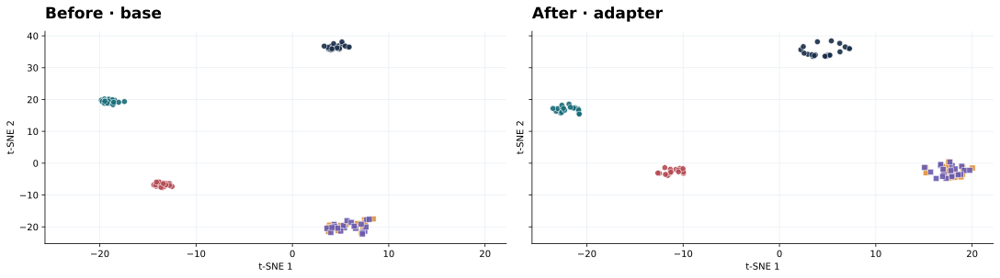

Can English mathematical reasoning transfer to Tamil and Malayalam questions?
The model must understand a lower-resource language input, preserve the mathematical relationships, and produce a correct answer.
GSM8K-style word problems express quantities and relationships in natural language. Training targets use English step-by-step reasoning and a numeric final answer.
One aligned record contains five questions and one English answer
Each question is a different language or script rendering of the same math problem.
question_en, question_ta, question_ml, question_ta_roman, question_ml_roman + answer_enEnglish
question_en
A crocodile grows 8 inches long in 4 years. At this rate, how many inches will it grow in 13 years?
Tamil
question_ta
ஒரு முதலை 4 ஆண்டுகளில் 8 அங்குலம் நீளம் வளரும். இந்த வீதத்தில், 13 ஆண்டுகளில் அது எத்தனை அங்குலம் வளரும்?
Malayalam
question_ml
ഒരു മുതല 4 വർഷം കൊണ്ട് 8 ഇഞ്ച് നീളം വളരുന്നു. ഈ നിരക്കിൽ, 13 വർഷത്തിൽ അത് എത്ര ഇഞ്ച് വളരും?
Romanized Tamil
question_ta_roman
Oru muthalai 4 aandugalil 8 angulam neelam valarum. Indha veedaththil, 13 aandugalil athu eththana angulam valarum?
Romanized Malayalam
question_ml_roman
Oru muthal 4 varsham kondu 8 inch neelam valarunnu. Ee nirathil, 13 varshathil ath ethra inch valarum?
answer_en: 8 ÷ 4 = 2 inches per year; 13 × 2 = 26. Final answer: #### 26Give cross-lingual context, then balance exposure
The first two techniques shape which examples the model sees.
xICL · cross-lingual demonstrations
Place solved examples in multiple languages before the target question. The target can borrow the pattern “read in one language, reason in English.”
Target: Tamil question → English reasoning?
Configured in code: 4 demonstrations, selected for language diversity.
mSampling · multilingual sampling
Set desired sampling weight for each question form so the training stream gives them balanced attention.
Purpose: avoid training being dominated by one question form.
Vary reasoning paths, then transfer token-level knowledge
The last two techniques concern the reasoning target and the loss used to learn it.
Random Online CoT
Sample multiple candidate reasoning traces for a question; select a trace with an extractable numeric answer.
Configured in code: 3 candidate paths per question.
xDistill · token-level distillation
A high-resource English prompt supplies soft next-token probabilities. A student reading the aligned Tamil or Malayalam prompt learns to match them while also learning the known answer.
teacher distribution
student distribution
Temperature: 2
Goal: align answer-token behavior across languages.
Before and after alignment of matched questions
20 held-out source problems (two groups of 10) × five forms, embedded with the base and the specified adapter.

Paired bootstrap 95% interval: +0.074 to +0.096
EN–ML 0.028 → 0.182 (+0.154)
EN–MLʳ 0.455 → 0.374 (−0.081)
Translate the Tamil question, then learn the full solution format
The TAPO stream begins with a separate supervised warm-up before reinforcement learning.
Aligned training example
Tamil GSM8K questions are paired with English originals and verified answers. Sarvam Translate supports the Tamil-to-English preparation.
The model must express what it understood before solving the problem.
Teach the output structure
Train on a completion that contains the translated question, worked solution, and answer. Only completion tokens contribute to the SFT loss.
English question…
</english_translation>
Reasoning steps…
\boxed{answer}
The included preset uses 2,000 worked examples for one SFT epoch.
IndicReason-TAPO-main.zip (sft_data.py, README). The visual shows the training format, not a quoted model completion.Reward translation and mathematical correctness separately
Sample several completions, score both stages, and assign token-level credit within each group.
What gets scored?
\boxed{…} answer must appear after the translation and match the gold mathematical answer.The two rewards are normalized separately across sampled answers to the same prompt.
Which tokens get credit?
The included preset samples 8 completions per Tamil question and normalizes the two rewards within each group.
Core clipped DAPO term shown. The preset has β = 0; vLLM training also applies an importance-sampling correction.
rewards.py, trainer.py, tapo_ta_qwen35_sft_2000_rl.yaml); report §4.3 describes the broader method.Before and after results on 500 Tamil questions
Numeric exact-match accuracy and answer-extraction coverage, transcribed from the report.
xCOT comparison · report Table 2
Qwen3.5-2B baseline and cross-lingual supervised checkpoints
| Model / stage | Accuracy | Coverage | Δ base |
|---|---|---|---|
| Base model | 23.8% | 82.2% | — |
| Preliminary 1-epoch SFT | 33.4% | 98.4% | +9.6 pp |
| Qwen3.5-2B + xCoT | 30.0% | 99.0% | +6.2 pp |
The report flags a conflicting later recap for preliminary SFT; use the dedicated table values above with that caveat.
TAPO stream · report Table 3
Separate training recipe, shown for full report context
| Model / stage | Accuracy | Coverage | Δ base |
|---|---|---|---|
| Base model | 23.8% | 83.0% | — |
| TAPO SFT warm-up | 36.0% | 97.2% | +12.2 pp |
| Warm-up + TAPO RL | 39.0% | 97.8% | +15.2 pp |
The TAPO stream uses different data preparation and training, so its final result is not an xCOT ablation.